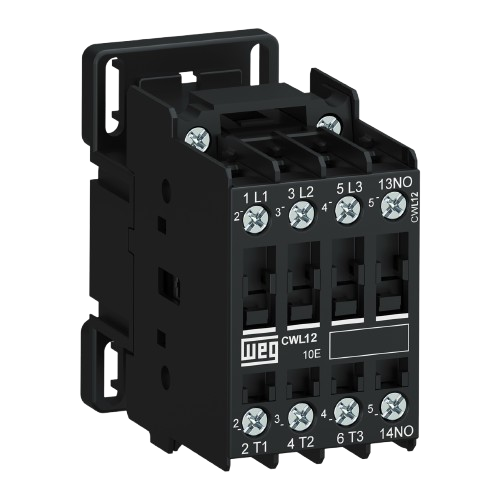
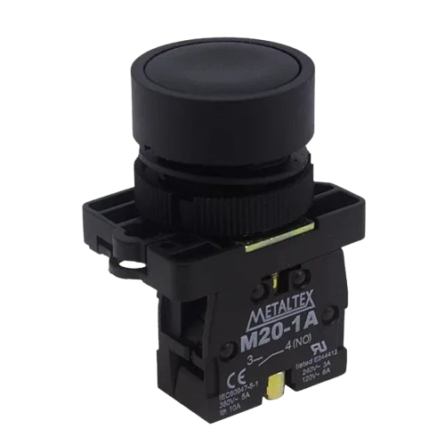
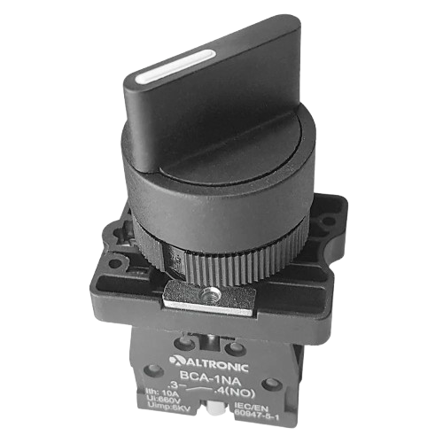
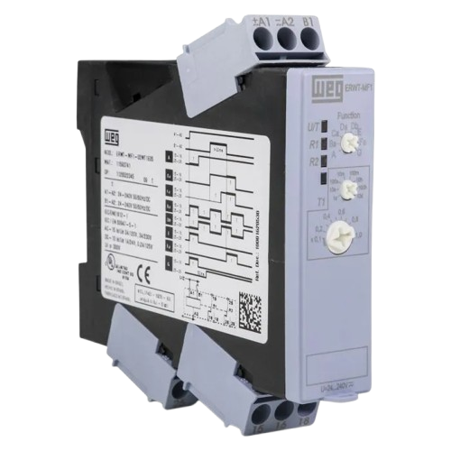

O contator é um dispositivo eletromecânico utilizado para controlar a ligação e o desligamento de cargas elétricas de potência. Seu acionamento ocorre por meio de uma bobina eletromagnética que fecha ou abre seus contatos quando energizada.
É um dos componentes mais utilizados em sistemas de automação industrial, pois permite controlar motores e outros equipamentos de forma segura e eficiente.

Um contator pode realizar milhares de manobras durante sua vida útil sem comprometer seu funcionamento.
Vídeo demonstrando o funcionamento interno de um contator.
A botoeira é um dispositivo de comando utilizado para enviar sinais elétricos aos circuitos de controle. Seu acionamento é momentâneo, ou seja, ao soltar o botão ele retorna à posição original.
As botoeiras podem ser classificadas como normalmente abertas (NA) ou normalmente fechadas (NF), dependendo da sua função no circuito.

As botoeiras de emergência geralmente possuem cor vermelha e formato tipo cogumelo para facilitar sua identificação.
Vídeo explicando os tipos de botoeiras e suas aplicações.
A chave de retenção é um dispositivo de comando que permanece na posição selecionada mesmo após o operador retirar a mão do acionamento. Diferente da botoeira, ela não retorna automaticamente.
Esse componente é utilizado quando é necessário manter um equipamento ligado ou em determinada condição de operação.

Muitas chaves seletoras encontradas em painéis industriais funcionam com sistema de retenção.
Vídeo demonstrando o uso da chave de retenção.
O relé temporizador é um dispositivo utilizado para controlar ações elétricas com base em um tempo pré-programado. Ele pode atrasar a ligação ou o desligamento de um circuito.
Esse componente é muito utilizado em automação industrial para criar sequências de operação.

Existem temporizadores analógicos e digitais, cada um adequado para diferentes necessidades.
Vídeo explicando a programação de um relé temporizador.